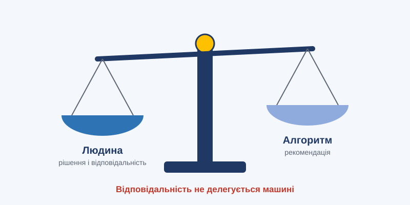

Тема 15. Етика, право та відповідальність

План заняття: цілі, навчальні питання, розподіл часу
Вид заняття: семінар-дискусія.
Час: 2 години (90 хв).
Місце: навчальний клас.
Навчальні цілі:
- Ознайомити з основними етичними принципами ШІ та джерелами алгоритмічної упередженості.
- Ознайомити з підходами до регулювання ШІ (EU AI Act, міжнародні документи, підхід України).
- Сформувати розуміння неможливості делегувати відповідальність машині.
Навчальні питання:
- Етичні принципи. Алгоритмічна упередженість. Пояснюваність.
- Регулювання ШІ.
- Відповідальність, авторське право, нейроправа.
Матеріальне забезпечення: проектор, картки з етичними дилемами.
Розподіл часу:
| Етап | Зміст | Час |
|---|---|---|
| Вступна частина | Тема, цілі, правила дискусії | 5 хв |
| Навчальне питання 1 | Принципи, упередженість (розбір прикладів) | 20 хв |
| Навчальне питання 2 | Рівні ризику AI Act. Вправа: класифікувати 8 систем | 20 хв |
| Навчальне питання 3 | Дискусія «Хто відповідає?» | 35 хв |
| Заключна частина | Підсумки | 10 хв |
Методичні вказівки викладачу: у дискусії не нав'язуйте «правильної» відповіді, а вимагайте аргументів. Наголосіть: законодавство в цій сфері швидко змінюється, тому курсант має знати, де шукати актуальні норми.
Навчальний матеріал
15.1. Чому ШІ потребує етики
Когнітивні системи ухвалюють або впливають на рішення про кредити, працевлаштування, лікування, свободу людей і навіть застосування сили. Помилка алгоритму може зачепити мільйони людей одночасно. Тому етика ШІ — не абстрактна філософія, а практична необхідність.
15.2. Ключові етичні принципи
Більшість міжнародних рамок (ОЕСР, ЮНЕСКО, ЄС) спираються на схожі принципи:
- Повага до людської гідності та прав людини.
- Справедливість і недискримінація.
- Прозорість і пояснюваність.
- Безпека та надійність.
- Приватність і захист даних.
- Підзвітність: завжди має бути відповідальна людина чи організація.
- Людський контроль.
- Добробут суспільства та довкілля.
15.3. Алгоритмічна упередженість
Звідки вона береться:
- історичні дані відображають минулу дискримінацію: якщо в минулому на технічні посади брали переважно чоловіків, модель «навчиться» віддавати їм перевагу;
- нерепрезентативні вибірки: системи розпізнавання облич гірше працювали для людей з темнішим кольором шкіри, бо таких облич було мало в даних;
- хибні проксі-змінні: поштовий індекс може непрямо кодувати етнічне походження;
- зворотні петлі: прогнозування злочинності направляє більше патрулів у певні райони, там фіксують більше злочинів, і модель «підтверджує» себе.
Протидія:
- аудит даних і моделей;
- тестування на різних групах;
- різноманітні команди розробників;
- постійний моніторинг після впровадження.
15.4. Прозорість і пояснюваність (XAI)
Пояснюваний ШІ (Explainable AI) відповідає на питання: «Чому система ухвалила це рішення?»
Методи:
- важливість ознак: які фактори найбільше вплинули;
- теплові карти на зображеннях: на що «дивилась» модель;
- контрфактичні пояснення: «кредит схвалили б, якби дохід був на 10% вищим»;
- ланцюжки міркувань у мовних моделях, хоча вони не завжди точно відображають реальний процес усередині моделі.
Людина має право знати, що рішення щодо неї ухвалювалося за участі ШІ, і отримати зрозуміле пояснення.
15.5. Регулювання
Європейський Союз: AI Act (ухвалений 2024 року, поетапне впровадження) поділяє системи ШІ за рівнем ризику:
| Рівень ризику | Приклади | Вимоги |
|---|---|---|
| Неприйнятний | Соціальний рейтинг громадян, маніпулятивні системи, певні види біометричного стеження | Заборона |
| Високий | ШІ в медицині, освіті, працевлаштуванні, правосудді, критичній інфраструктурі | Суворі вимоги: якість даних, документація, людський нагляд, реєстрація |
| Обмежений | Чат-боти, генерований контент | Прозорість: користувач має знати, що спілкується з ШІ |
| Мінімальний | Спам-фільтри, ШІ в іграх | Без спеціальних вимог |
Окремі вимоги стосуються моделей загального призначення: документація, дотримання авторського права, оцінка системних ризиків для найпотужніших моделей.
Інші ініціативи:
- Рамкова конвенція Ради Європи про штучний інтелект і права людини;
- принципи ОЕСР щодо ШІ;
- Рекомендація ЮНЕСКО з етики ШІ;
- національні стратегії й законодавство (США, Велика Британія, Китай та ін.);
- міжнародні саміти з безпеки ШІ.
Україна рухається шляхом гармонізації з європейським законодавством. Обрано підхід «знизу вгору»: спершу рекомендації, саморегуляція бізнесу та «білі книги», потім законодавство, сумісне з AI Act.
15.6. Відповідальність
Коли ШІ помиляється, хто винен?
- розробник моделі?
- компанія, що впровадила систему?
- користувач, що застосував рекомендацію?
- постачальник даних?
Загальний принцип такий: відповідальність не може бути делегована машині. Кожна система має мати визначеного людського «власника», що відповідає за її використання.
15.7. Авторське право та інтелектуальна власність
- Чи можна навчати моделі на захищених творах? Ідуть судові процеси, правова практика формується.
- Чи захищається авторським правом згенерований контент? У більшості юрисдикцій лише за суттєвого творчого внеску людини.
- Як захистити стиль, голос і образ людини від копіювання?
15.8. Нейроправа
Див. тему 8: ментальна приватність, когнітивна свобода, ментальна цілісність. З розвитком нейротехнологій ці права стануть такими ж важливими, як захист персональних даних.
Висновки
- Етика ШІ — це практичні вимоги до справедливості, прозорості, безпеки та підзвітності.
- Регулювання будується за ризик-орієнтованим підходом.
- Відповідальність за рішення завжди лишається за людьми.
Запитання для роздумів
- Наведіть приклад, де упередженість ШІ може завдати серйозної шкоди у вашій сфері.
- Чи має людина право відмовитися від рішення, ухваленого ШІ, і вимагати розгляду людиною?
Практичне завдання
Дискусія «Хто відповідає?» (у групах, 35 хв).
Ситуація: система автоматичного виявлення об'єктів позначила цивільний автомобіль як військову техніку. Оператор, перевантажений роботою, не перевірив позначку і передав дані далі. Внаслідок цього було ухвалене хибне рішення.
- Визначте всіх учасників ланцюга: розробник, постачальник даних, підрозділ, що впровадив систему, оператор, командир.
- Яка частка відповідальності кожного? Аргументуйте.
- Які технічні, організаційні та навчальні заходи запобігли б ситуації?
- Які вимоги до таких систем ви запропонували б закріпити в правилах?
Критерії оцінювання (2 бали): повнота аналізу ланцюга відповідальності (1 бал), конкретність запобіжних заходів (1 бал).
Тест для самоконтролю
Обери відповідь у кожному запитанні й натисни «Перевірити відповіді».